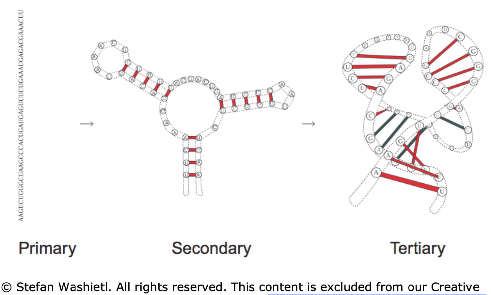
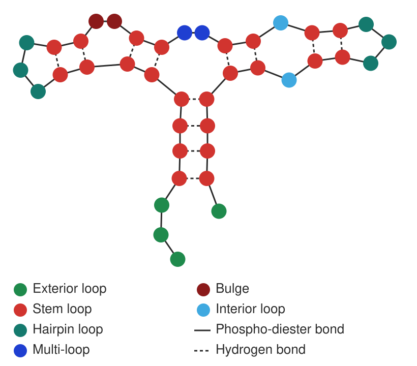
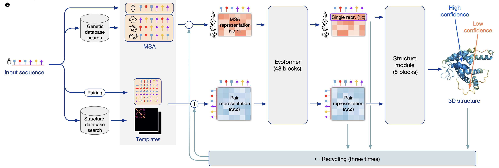

Omics#
Some papers involving proteins and ml, especially predicting protein structure from dna/rna.
About this chapter
Most of this page is about one problem: predicting a molecule’s structure from its sequence. It starts with the databases and code, then RNA, where most work predicts secondary structure (which bases pair up) with dynamic programming over pairing energies, and newer methods add deep learning or go to full 3d structure.
The protein section follows the same path from basics to deep learning: multiple sequence alignments, contact prediction, and then AlphaFold and the MSA Transformer. The page ends with therapeutic interfering particles, engineered virus fragments that spread like a virus but suppress it.
Overview#
Vocabulary#
oligonucleotide = oligo = short single strands of synthetic DNA or RNA
Data#
Where solved structures live: the nucleic acid database for RNA and DNA and the protein databank for proteins, plus chemical probing (SHAPE) as an experimental signal about RNA structure.
nucleic acid database (NDB)
protein databank (PDB)
rna
RNABase: an annotated database of RNA structures(2003) - no longer maintainedAccurate SHAPE-directed RNA structure determination | PNAS (deigan et al. 2009) - chemical probing
Code#
Tools for RNA work: the Galaxy workbench and ViennaRNA for classic folding with constraints, and neural folding models (SPOT-RNA, mxfold2) that later sections describe.
rna
Galaxy RNA workbench - many tools including alignment, annotation, interaction
viennaRNA - incorporating constraints into predictions
neural nets
-
uses an Ensemble of Two-dimensional Deep Neural Networks and Transfer Learning
mxfold2 (sato et al. 2021)
-
Rna structure prediction#
RNA first, because its problem is simpler to state: most of the stabilizing energy is in which bases pair, so prediction mostly means secondary structure, with 3d prediction as a harder follow-up.
Rna basics#
RNA structure is described at three levels: the sequence (primary), the base pairs (secondary) and the 3d shape (tertiary). For RNA most of the stabilizing energy comes from the secondary structure, which is why “RNA folding” usually means predicting base pairs.
rna does many things
certain structures of RNA lend themselves to catalytic activities
tRNA/mRNA convert DNA into proteins
RNA also serves as the information storage and replication agent in some viruses
rna components
4 bases: adenine-uracil (instead of dna’s thymine), cytosine-guanine
ribose sugar in RNA is more flexible than DNA
RNA World Hypothesis (Walter Gilbert, 1986) - suggests RNA was precursor to modern life
later dna stepped in for info storage (more stable) and proteins took over for catalyzing reactions
rna structure

Fig. 201 Figure 1. The three levels of RNA structure: the base sequence (primary), base pairs forming stems and loops (secondary, red bars are pairs), and the folded 3d shape (tertiary).#
primary - sequence in which the bases are aligned - relatively simple, comes from sequencing
secondary - 2d analysis of hydrogen bonds between rna parts (double-strands, hairpins, loops) - most of stabilizing free energy comes from here (unlike proteins, where tertiary is most important)
most work on “RNA folding” predicts secondary structure from primary structure
a lot of this comes from hydrogen bonds between pairs (watson-crick edge)
other parts of the pairs (e.g. the Hoogsteen- / CH-edge and the sugar edge) can also form bonds
tertiary - complete 3d structure (e.g. bends, twists)
decomposition of an RNA secondary structure into structural elements. Energy contributions are assigned to the plane faces depending on their type and the nucleotides delimiting them. “Stem loops”, i.e., stacked pairs of base pairs, from the unit of helices

Fig. 202 Figure 2. A secondary structure split into elements by color: stems of stacked pairs, hairpin loops at the tips, a multi-loop joining three helices, a bulge and an interior loop. Energy models assign a contribution to each element.#
RNA-Seq - RNA-Seq uses next-generation sequencing (NGS) to reveal the presence and quantity of RNA in a biological sample at a given moment, analyzing the continuously changing cellular transcriptome

Algorithms#
Two families: minimize total pairing energy with dynamic programming (Nussinov, Zuker), or fit a probabilistic grammar. Both rely on the no-crossings assumption, which gives the problem a tree structure; later work relaxes it, and recent work plugs neural-net scores into the Zuker-style recursion.
computational bio book ch 10 (kellis, 2016)
2 main approaches to rna folding (i.e. predicting rna structure):
(1) thermodynamic stability of the molecule
(2) probabilistic models
note: can use evolutionary (i.e. phylogenetic) data to improve either of these
some RNA changes still result in similar structures
consistent mutations - something mutates but structure doesn’t change (e.g. AU -> G)
compensatory mutations - two mutations but structure doesn’t change (e.g. AU -> CU -> CG)
incorporate similarities to other RNAs along with something like zuker algorithm
thermodynamic stability - uses more domain knowledge
dynamic programming approach: given energy value for each pair, minimize total energy by pairing up appropriate base pairs
assumption: no crossings - given a subsequence \([i,j]\), there is either no edge connecting to the ith base (meaning it is unpaired) or there is some edge connecting the ith base to the kth base where \(i < k \leq j\) (meaning the ith base is paired to the kth base)
this induces a tree-structure to theh problem
nussinov algorithm (1978)
ignores stacking interactions between neighboring pairs (i.e. assumes there are no pseudo-knots)
zuker algorithm (1981) - includes stacking energies
probabilistic approach - uses more statistical likelihood
stochastic context-free grammer (SCFG) is like an extension of HMM that incorporates some RNA constraints (e.g. bonds must happen between pairs)
Recent advances in RNA folding (fallmann et al. 2017)
algorithmic advances
algorithmic constraints
locality - restrict maximal span of base pairs
add in bonus energies as hard or soft constraints
rna-rna and rna-protein interactions - there are different algorithms for telling how 2 things will interact
newer algorithms take into account some aspects of tertiary structure to predict secondary structure (e.g. motifs, nonstandard base pairs, pseudo-knots)
representation
...((((((((...)). .)). .((.((...)). )))))).“dot-parenthesis” notation - opening and closing represent bonded pairs
evaluation
computing alignments is non-obvious in these representations
centroids - structures with a minimum distance to all other structures in the ensemble of possible structures
consensus structures - given a good alignment of a collection of related RNA structures, can compute their consensus structure, (i.e., a set of base pairs at corresponding alignment positions)
Folding and Finding RNA Secondary Structure (matthews et al. 2010)
new work drops the assumption of no knots (e.g. crossings)
project to topology (e.g. low/high genus) - e.g. projecting to a torus can remove crossings but still allow us to use dynamic programming
RNA secondary structure prediction using deep learning with thermodynamic integration (sato et al. 2021)
RNA-folding scores learnt using a DNN are integrated together with Turner’s nearest-neighbor free energy parameters
DNN predicts scores that are fed into zuker-style dynamic programming
3d rna structure prediction#
Full 3d prediction is usually a search: propose structures, score them with an energy function, keep the most stable. ARES replaces the hand-built energy function with a rotation-equivariant network.
Geometric deep learning of RNA structure (townshend, …, dror 2021 - atomic ai + stanford, science)
uses neural network as scoring mode (called ARES = Atomic Rotationally Equivariant Scorer)
this gives energy function for (primary sequence, structure) pair
architecture
captures rotational + translational symmetries
startup atomic ai works on this
trained with only 18 known RNA structures
uses only atomic coordinates as inputs and incorporates no RNA-specific information
Review: RNA 3D Structure Prediction Using Coarse-Grained Model (li & chen, 2021)
all-atom - more precise, each nucleotide models ~20 heavy atoms + ~10 hydrogen atoms - relatively rare
coarse-grained - less precise
steps
input - RNA sequence + optinal secondary structure + more (e.g. distance between some atom pairs)
sampling - includes discriminator (=scoring function = (potential) energy function = force field) and generator
generator proposes new structures (e.g. MCMC)
discriminator decides which is the most stable - 3 types of energy to consider
output - sometimes pick lowest energy structure, somestimes cluster low-energy clusters and pick centroid
all-atom structure reconstruction - the fragment matching algorithm (jonikas et al., 2009a) is often used, followed by structure refinement to remove steric clashes and chain breaks
12 papers that differ slightly in these steps
ex. graph-based: 2d structure mapped to a graph
three open-source papers that yield all-atom structure
IsRNA1: De Novo Prediction and Blind Screening of RNA 3D Structures (zhang et al. 2021)
origina IsRNA (zhang & chen, 2018)
iFoldRNA: three-dimensional RNA structure prediction and folding (sharma et al. 2008 )
SimRNA (boiecki et al. 2016)
Protein structure prediction (dna)#
Protein methods start from a multiple sequence alignment of related proteins, modeled one column at a time (PSSM) or in pairs of positions (Potts model). The usual targets are a contact map or the full 3d structure.
Protein basics#
Why prediction is worth it: solving one structure experimentally (X-ray crystallography, NMR) is slow and expensive, while sequences are cheap and shaped by evolution through mutation and selection.
the standard way to obtain the 3D structure of a protein is X-ray crystallography
takes ~1 year & $120k to obtain the structure of a single protein through X-ray crystallography (source)
alternative: nuclear magnetic resonance (NMR) spectroscopy
on average, a protein is composed of 300 amino acids (residues)
21 amino acid types
the first residue is fixed
proteins evolved via mutations (e.g. additions, substitutions)
fitness selects the best one
Algorithm basics#
The inputs and targets that the deep learning papers build on: an MSA of related proteins, modeled per column or per pair of positions, and either a contact map or full 3d coordinates as output. TAPE adds a benchmark for protein embeddings.
multiple-sequence-alignment (MSA) - alignment of 3 or more amino acid (or nucleic acid) sequences, which show conserved regions within a protein family which are of structural and functional importance
matrix is (n_proteins x n_amino_acids)
independent model (PSSM) - model likelihood for each column independently
pairwise sites (potts model) - model likelihood for pairs of positions
prediction problems
contact prediction - binary map for physical contacts in the final protein
common to predict this, evaluation uses binary metrics
protein folding - predict 3d positions of all amino acids in the output structure
Evaluating Protein Transfer Learning with TAPE (rao et al. 2019) - given embeddings, 5 tasks to measure downstream performance (rao et al. 2019)
tasks: structure (SS + contact), evolutionary (homology), engineering (fluorescence + stability)
future: interactions between molecules (e.g. protein-protein, environment, highly designed proteins)
Deep-learning papers#
AlphaFold takes two inputs, the MSA and a residue-by-residue pair representation, refines both with the Evoformer, and turns them into coordinates with a structure module that respects rotations and translations.
De novo protein design by deep network hallucination | Nature (anishchenko…baker, 2021)
deep networks trained to predict native protein structures from their sequences can be inverted to design new proteins
Highly accurate protein structure prediction with AlphaFold | Nature (jumper, …, hassabis, 2021)
model overview

Fig. 203 Figure 3. AlphaFold’s pipeline. The input sequence is searched against genetic and structure databases to build an MSA and templates; the MSA and pair representations pass through 48 Evoformer blocks and 8 structure module blocks, and the whole thing is recycled three times. The output structure is colored by confidence.#
preprocessing
MSA (\(N_{seq} \times N_{res}\))
uses evolutionary information
pair representation (\(N_{res} \times N_{res}\))
finding templates - find similar proteins to model “pairs of residues” - which residues are likely to interact with each other
residue is the same as an amino acid
evoformer
uses attention on graph network
iterative
structure model - converts msa/pair representations into set of (x,y,z) coordinates
“invariant point attention” - invariance to translations and rotations
predicts a global frame (residue gas)
MSA Transformer (rao et al. 2021) - predicts contact prediction
train via masking
output (contact prediction) is just linear combination of attention heads finetuned on relatively little data
some architecture tricks
attention is axial - applied to rows / columns rather than entire input
EquiBind: Geometric Deep Learning for Drug Binding Structure Prediction (stärk et al. 2022)
Covid#
The Coronavirus Nucleocapsid Is a Multifunctional Protein (mcbride et al. 2014)
coronavirus nucleocapsid = N protein
TIPs - using viruses for treatment#
A separate topic. Drugs don’t mutate and are hard to deliver; a TIP is a shortened copy of a virus that can’t replicate on its own, so it takes the virus’s replication machinery, picks up its mutations, and spreads along with it.
videos
2 issues
mutation - viruses mutate, our drugs don’t
transmission - adherence / deployment - hard to give certain the drugs
solution: use modified versions of viruses as treatment
therapeutic interfering particles or TIPs are engineered deletion mutants designed to piggyback on a virus and deprive the virus of replication material
TIP is like a parasite of the virus - it clips off some of the virus DNA (via genetic engineering)
it doesn’t contain the code for replication, just for getting into the cell
since it’s shorter, it’s made more efficiently - thus it outcompetes the virus
how do TIPs spread?
mutations happen because the “copy machine” within a cell makes a particular mutation
when a new virus comes along, it makes some of the mutated parts
TIPs can’t replicate, so they take some of the mutated parts made by the new virus
then, the TIP gets copied with the same mutation as the virus and this now spreads
effect
viral load will immediately be lower
superspreaders can spread treatment to others
can take before exposure as well (although harder to get approval for this)
note: HIV mutates very fast so a TIP in a single person sees a lot of variants
HIP also enters the genome (so corresponding TIP does this as well)
Identification of a therapeutic interfering particle—A single-dose SARS-CoV-2 antiviral intervention with a high barrier to resistance (chaturvedi…weinberger, 2021)
DIP = defective interfering particle = wild-type virus
single administration of TIP RNA inhibits SARS-CoV-2 sustainably in continuous cultures
in hamsters, both prophylactic and therapeutic intranasal administration of lipid-nanoparticle TIPs durably suppressed SARS-CoV-2 by 100-fold in the lungs, reduced pro-inflammatory cytokine expression, and prevented severe pulmonary edema
TIP consists 1k - 2k bases
hard to actually look at structure here (requires cryoEM)
Random papers#
Key ideas
Structure prediction from sequence is the shared problem; RNA work targets mostly secondary structure, protein work mostly contacts or full 3d structure.
Classic RNA folding is dynamic programming over pairing energies under a no-crossings assumption; newer work relaxes that assumption or feeds neural-net scores into the same recursion.
3d prediction, for RNA and proteins, separates into proposing structures and scoring them, and learned scorers that respect rotations and translations replace hand-built energy functions.
Protein methods rely on evolutionary information in multiple sequence alignments; AlphaFold and the MSA Transformer process the MSA with attention.
TIPs are a different idea, engineered virus fragments that take the virus’s replication machinery and mutations, so the treatment evolves and spreads along with the virus.